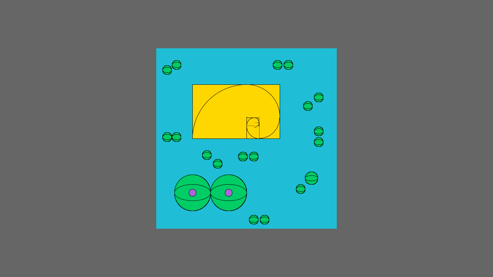

Eddy Benitez
Home
Medicine
Spiral
Romantic
Soul
Proposal
Digital Worlds
Mourning Mac Miller
Mythical Realm
On The Brain Podcast

Title: Spiral
Dimensions: 500px X 500px
Medium: Processing 3
Description: Over the centuries, a great deal of lore has built up around phi. The idea represents perfect beauty and is uniquely found throughout nature. But much of that has no basis in reality. With perfection comes imperfects, numerous amount of asymmetrical lines and shapes that lead us to conclude the results as ugly. But ugliness also bring beauty of being unique!
Title: Wonders
Dimensions: 1920 x 1080
Duration: 1:02
Medium: 2d Augmented Reality
Description: My family and I always enjoyed the green open area that the country side proveds. I personally will forever appreciate being able grow up in an environment where nature isn't seen as a pest, but a piece of art. I included most of the animels I seen throught my years living in Margan hill, San Martin and Gilroy. What was also included were sea creatures. One of my favorite hobbies are fishing on the cost of California. I consider it my second home.
The animels have spotted lines across they're bodies. These patterns show the alignments of the goldren ratio, which is implemented into natures natural laws